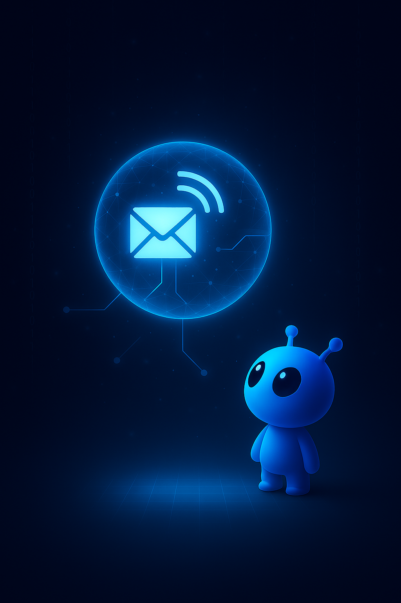

Accelerating AI use for Data, Companies & Learners

Aldin AI pioneers ethical, high-impact artificial-intelligence solutions that unlock the full value of data while empowering learners and protecting privacy. We bridge frontier research and practical deployment to create tools that are safe, inclusive, and future-proof. Aldin AI is not only a think tank, but an execution hub delivering the most relevant ways to utilize AI.

Aldin AI delivers governed, enterprise‑grade systems that integrate seamlessly with your existing infrastructure. Every solution is engineered with a privacy‑first mindset and designed to accelerate impact without disrupting operations.
Data Governance
Frameworks, controls, and synthetic‑data‑powered workflows that ensure accuracy, compliance, and safe innovation across your entire data estate.
AI Deployment
Sidecar AI that plugs into legacy systems, automates decision flows, and enhances operations without requiring costly rewrites or migrations.
Custom Solutions
Bespoke architectures, pipelines, and AI systems tailored to your environment, mission, and constraints.
Strategic Consulting
Guidance across governance, AI roadmaps, compliance, and analytics optimization.
An interactive K‑12 assistant with avatar, voice + text, and curriculum‑aligned knowledge base.

ASHER’s journal tracks learning history, mastery, and growth.

Parents define cultural context, sensitivity, neutrality, and learning style.

Seeking pre‑seed partners for MVP completion and pilot deployments.

A deploy‑anywhere system that connects to enterprise data sources, configures governed frameworks, builds pipelines, executes actions, and generates real‑time insights—while eliminating privacy risk through high‑fidelity synthetic data.
Its synthetic twins preserve statistical truth, enforce differential privacy, and maintain structural integrity with <0.5% schema deviation.
Seeking seed funding to expand scale‑out performance, enterprise integrations, and compliance certification.

Aldin AI LLC was established in May 2025 in White Lake, Michigan by Salah A. Mokhayesh — a 20‑year leader in enterprise data architecture.
Under his direction, Aldin AI delivers mission‑critical, privacy‑first AI solutions that convert complex data challenges into measurable business value.

Email: salah@aldin.ai
GitHub: github.com/mokhayesh/Aldin-AI
LinkedIn: linkedin.com/in/salah-mokhayesh-06509021